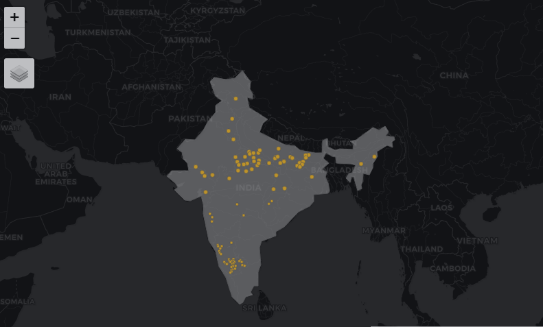

Shreya Kolalapudi
Introduction
Greetings, this is Shreya Kolalapudi from Bangalore majoring in Human Centered Design. This was the first time I was introduced to R media. It is a fantastic platform to start with and was very fun to explore different sets of graph layouts to repreent data in an intresting way so that it is easier for people to understand the data by a quick glimpse. In the following graphs, I have messed around with a lot of layouts and aesthetics and learned many elements step by step.
Graph 1
We had to recrete the graph from the website, so I extracted the data and then analizied and understood the data so that I could represent it in the graph format.
terrorist_incidents <- (read_csv("terrorist-incidents.csv"))Siingle Quantitiy graph using ggplot
# here, x= x and y = carat.
ggplot(terrorist_incidents, aes(x =Year, color=Entity, y=terrorist_incidents))+
geom_line() + geom_point() + theme(legend.position = "none") Used the color aesthetic and gave values to x and y using ggplot,geom_line and geom_point. Also used a theme to understand the data better.

Graph 2
The graph shows us the connections between the different characters based on their conversations in the pilot episode of Brooklyn nine-nine. We took the variables like their relationships, topics of the conversation,durations,and assigned them to different geometric properties to make the information comprehensive. We also noticed how Terry Jeffords and Captain Holt had the longest conversation about Introduction as their link’s width was thicker than the other connecting lines.
b99_edges <- read_delim("b99_edges.csv", delim = ",")
b99_nodes <- read_delim("b99_nodes.csv", delim = ",")We used ggraph and a geom_arc to connect the characters.
ggraph(b99, layout = "linear", circular = TRUE) +
geom_edge_arc(aes(width = duration, color =topic), alpha = 0.8) +
scale_edge_width(range = c(0.2, 2)) +
geom_node_point(aes(color =profession, size = 2)) +
geom_node_text(aes(label = Names),repel = TRUE,
size = 3,
max.overlaps = 20) +
labs(edge_width = "duration") +
theme_graph()+
theme(legend.position = "right",
aspect.ratio = 1)
Graph 3
This is a night vision of the Indian map and all the places in India which ends with “pur” or “pura” are pointed in the map with the yellow color which represents the light in the dark map layout.
pur <- read.csv("data2/pur.csv")I used basemap and plotted the states with a yellow point whose places ends with “pur” or “pura”
#night mode
tm_basemap(leaflet::providers$CartoDB.DarkMatter)+
tm_shape(india) +
tm_polygons( alpha= 0.5)+
#points
tm_shape(pur_sf) +
tm_symbols(size = 0.2, col = "goldenrod1")
My Course Reflection
The workshop was pretty intense with new elements adding to our knowledge every day, and I saw this as an opportunity to learn something as exciting as this. It was fun to grasp the concepts step by step but we had to be very patient with it or else the whole code chunk will have an error.
I was pleased to be in Arvind’s last class because I did not want to have the fear of missing out. We explored with graphs, networks and maps in R studio and realized how informative and interesting the new platform was. We messed around with a lot of data and realized how a small mistake can ruin the whole code, so we were very delicate with the data and worked gently by learning the codes step by step. Our patience was dwindling time to time but it was a challenge to keep it together and deal with the trial and error method, it also taught us the value and importance of team work by coordinating with our fellow mates and how to control smashing our heads into our computers because of how hectic the work was.
This workshop introduced me to a whole new platform where I could be creative with representing the data and learn how codes work, R is a fantastic platform for starters like me and I would love to explore more and mess around with more data in future.
Jai Hind.